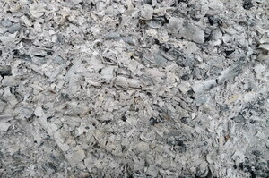
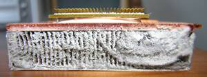

ⲕⲣⲙⲉ S, ⲕⲉⲣⲙⲓ B v ⲕⲣⲙⲉⲥ.
(noun male/female)
earth
ash, soot, dust [σποδος, χους]


1: ash, 2: soot, 3: dust
complete
| ⲣ ⲕ. SB | become ashes, dust541 | Crum: 117a | |||||||
116a
117a
117a
ⲕⲣⲙⲉⲥ SA, ⲕⲉⲣⲙⲉ (Ann 19 77 sic ?) S, ⲕⲣⲙⲉ A, ⲕⲉⲣⲙⲓ B, ⲕⲩⲣⲙⲓ F nn m & f, ash, soot, dust, cf ? قرماص (not قرموس): Ge 18 27 SB (A ⲉⲧⲛⲓⳉ), Lev 1 16 S m B f, Si 40 4 S m, Is 58 5 SB, Jon 3 6 SAB, He 9 13 SF m B σποδός, Lev 4 12 S m B f (var m) σποδία, Ge 30 39 SB ⲁⲩⲁⲛ ⲛⲕ. σποδοειδής Deu 28 24 B (S ⲕⲁϩ), Mor 56 12 S ⲡⲕ. ϩⲓϫⲛⲛⲉⲩⲁⲡⲏⲩⲉ χοῦς; Mic 1 10 A (S ⲉⲓⲧⲛ, B ⲕⲁϩⲓ) γῆ; Bel 14 B, Va 57 206 B τέφρα; Ex 9 8 B αἰθάλη; Mor 17 59 S ἀσβόλη; Miss 4 637 S = C 41 20 B ⲛⲕ. of ovens, Ann 19 77 S ⲟⲩⲕ. ϩⲛⲧϣⲏⲟⲩⲉ, R 1 2 39 S ⲡⲕ. ⲙⲡϩⲏⲃⲥ as eye-paint, PMéd 284 S ⲕ. ⲛⲭⲁⲣⲧⲏⲥ in recipe, BMis 488 S ⲟⲩⲕⲟⲩⲓ ⲛⲕ. from before door, ib 481 paral ⲕⲁϩ, Cai 42573 2 S in recipe ⲕ. ⲛⲧⲁϥⲡⲁⲧ (sic) ⲛⲟⲩⲛⲁⲙ, KroppK 62 S sim ⲡⲕ. ⲛⲧⲉϥⲁⲡⲉ, Miss 4 699 S empty corn ears ϣⲁⲩϣⲟⲩⲉ ⲕ. ⲉⲃⲟⲗ, Gu 61 S of bodies burnt ⲧⲉⲩⲕ., C 86 232 B, RAl 102 B sim ⲧⲉϥⲕ., ib ⲡⲓⲕ., AM 103 B ⲛⲓⲕ. of martyr, Ryl 433 B ⲁⲛⲟⲕ ⲡⲓⲕ. Nicodemus.
ⲣ ⲕ. SB, become ashes, dust: Ez 28 18 SB σπ. διδόναι; Va 57 242 B ⲛⲧⲟⲩⲉⲣ ⲕ. τεφροῦν; 2 Chr 4 16 B ⲛⲏ ⲉϣⲁⲩⲉⲣ ⲕ. ⲉⲃⲟⲗ ⲙⲙⲱⲟⲩ τοὺς ποδιστῆρας (reading ? σποδ-); ShBor 246 60 S if his deeds (ϩⲱⲃ) become as ⲕ., man ⲛⲁⲣ ϩⲟⲩⲉ ⲣ ⲕ., C 86 52 B to be burnt ϣⲁⲧⲟⲩⲉⲣ ⲕ.; ⲣ ⲁⲧⲕ. S, make (leave) no ash: Ann 18 285 burn wood ϣⲁⲛⲧⲉϥⲣ ⲁ.
See also:
| view | ϣⲟⲉⲓϣ S ϣⲁⲉⲓϣ Sa ϣⲟⲓϣ SO ⳉⲁⲉⲓⳉ A ϣⲱⲓϣ B ϣⲁⲓϣ F | (noun male) dust [κονιορτος, χους, ατμις]1288 |
| view | ϣϩⲓϭ S ϣϩⲓϫ SB | (noun male) dust [χνους, χους, κονιορτος, λεπτος]455 |
| view | ⲣⲏⲥⲉ A ⲣⲏⲓⲥⲓ, ⲣⲏⲓⲥⲉⲛ B | (noun male) dust [χους, χνους]1337 |
| view | plural: ⲑⲙⲓⲥ B plural: ⲑⲉⲙⲓⲥ F | (noun) dust [χνους]2777 |
| view | ϫⲏ, ϫⲓ S ϫⲓⲉ L ϫⲏⲓ B | (noun male) chip, mote of straw, dust [καρφος]172 |
| view | ϩⲏⲛⲉ SA | (noun female) lime, dust [κονια]2213 |
| view | ⲉⲓⲧⲛ, ⲓⲧⲛⲉ S ⲧⲛⲏ S ⲓⲧⲛ SL ⲓⲧⲉⲛ SBF | (noun male) ground, earth, dust, rubbish [γη, κοπρος, χους]
ground as bottom, lower part212 |
| view | ⲉⲧⲛⲓⳉ A | (noun male) ashes [σποδος]2762 |
| view | ϭⲱⲣ, ϭⲟⲩⲣ B | (noun male) smoke, cinder2602 |